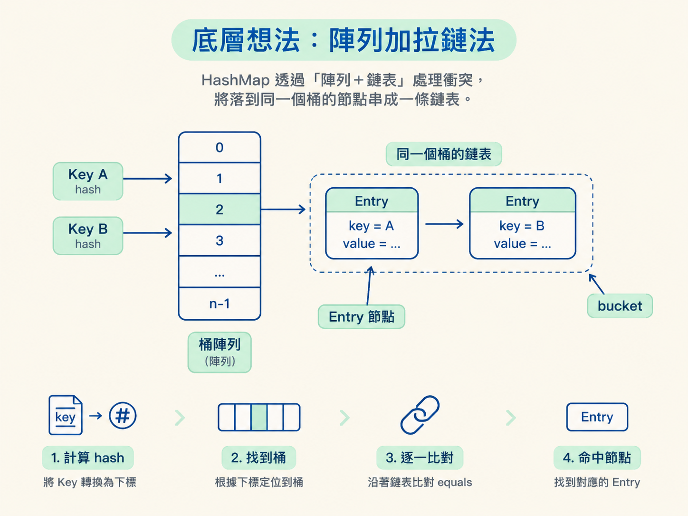
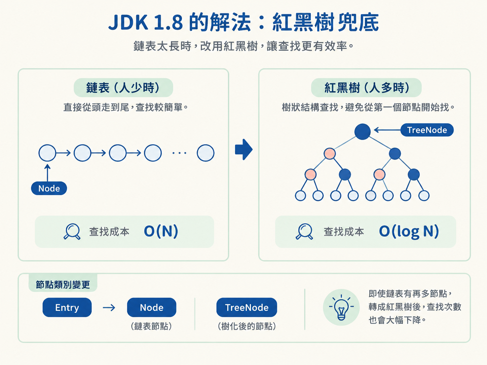
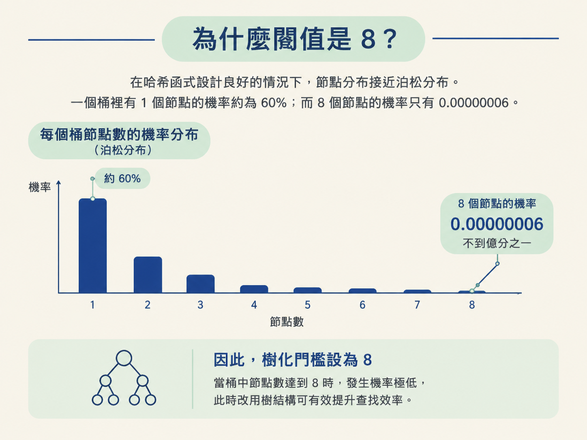
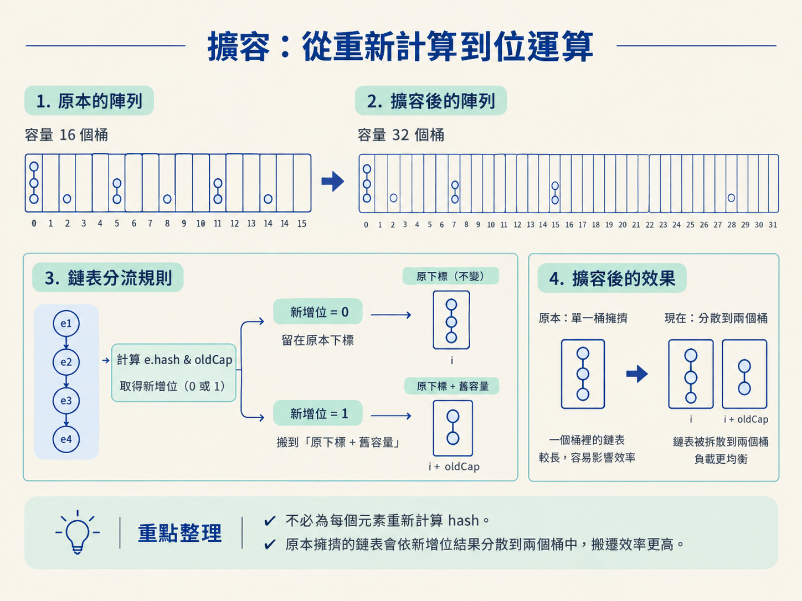
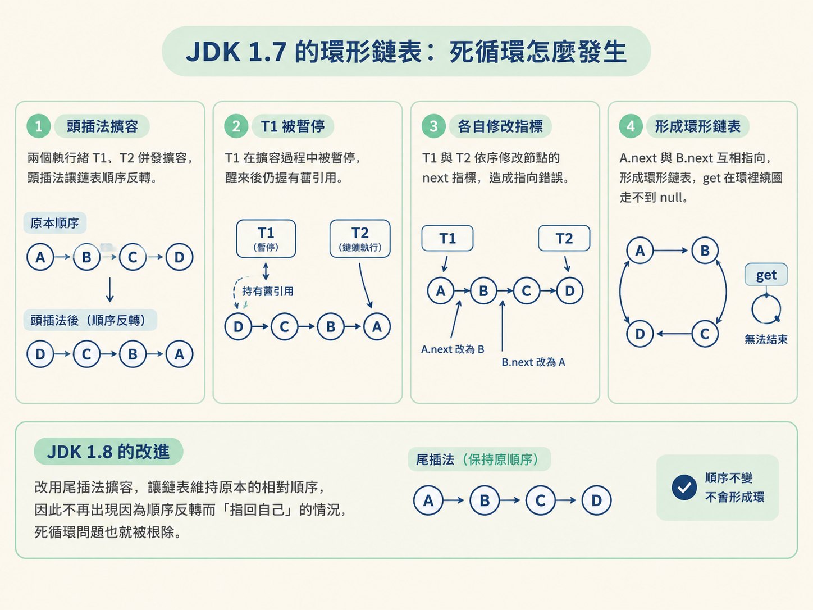

這一節會帶你看懂 HashMap 1.7 與 1.8 的結構差異，理解紅黑樹閾值與負載因子的由來，也弄清楚 JDK 1.7 為什麼會在併發擴容時把鏈結串列接成環。
你可能遇過這種情況：某個服務平常運作正常，卻突然出現 CPU 飆到 100% 的問題。重啟之後暫時恢復，過幾天卻又再次發生，而且問題特別容易出現在同時有讀寫的情境。
這背後常見的劇情有兩種。第一種是雜湊衝突太嚴重，讓原本應該很快的 HashMap 退化成一條超長鏈結串列；第二種則是 JDK 1.7 在併發擴容時，把鏈結串列接成了環，導致查詢永遠走不出去。
要聽懂這兩個問題，得先打開 HashMap 這個黑盒子，看看它裡面怎麼放資料，以及「快滿了」之後怎麼搬家。這一節會沿著 JDK 1.7 到 1.8 的演進來看：結構從「陣列＋鏈結串列」變成「陣列＋鏈結串列＋紅黑樹」，插入從頭插改成尾插，擴容則從重新計算 hash 改成位元運算。
你也會看到幾個面試很常問的數字：為什麼樹化閾值是 8、退化閾值是 6，而負載因子通常設成 0.75。這些數字不是隨手挑的，每一個都和效能、記憶體，以及結構穩定性有關。
HashMap 的核心其實很樸素。它先準備一個陣列，把陣列中的每個位置當成一個「桶（bucket）」；接著用 hash 將 Key 對應到某個桶的索引。
理想情況下，每個 Key 都落在不同的桶裡。搜尋時只要算出索引，再把資料取出來，速度接近常數時間，也就是 O(1)。但陣列長度畢竟有限，兩個不同的 Key 算出相同索引是很自然的事，這種情況就叫雜湊衝突。
HashMap 的處理方式是拉鏈法：發生衝突的節點不會被丟掉，而是掛在同一個桶下，串成一條鏈結串列。搜尋時，HashMap 先找到桶，再沿著鏈結串列逐個比對 equals。在 JDK 1.7 中，HashMap 的結構就是「陣列＋鏈結串列」，其中的節點類別叫作 Entry。

拉鏈法在衝突不多時很好用，但它有一個明顯弱點：如果大量 Key 的 hash 相同，或雜湊函式設計得不好，所有資料都會擠進同一個桶，掛在同一條鏈結串列上。
這時 HashMap 看起來還是 HashMap，實際上卻已經退化成單向鏈結串列。搜尋不能再直接定位到資料，而是得一個節點、一個節點地往後比對。複雜度會從 O(1) 退化成O(N)；如果鏈結串列有一萬個節點，最壞情況就得比對一萬次，CPU 當然可能一路飆高。
刻意製造大量雜湊衝突來拖垮服務的手法，就是所謂的 Hash DoS 攻擊。
JDK 1.8 在「陣列＋鏈結串列」之上增加了一層保險。當某個桶裡的鏈結串列太長，就把它轉成紅黑樹，讓最壞情況下的搜尋複雜度從 O(N) 降到 O(log N)。
可以把它想成一條原本越排越長的隊伍：人少時，直接從頭走到尾反而簡單；但人數一多，就得改用更有組織的樹狀結構，才能避免每次都從第一個人開始找。即使一條鏈結串列掛了十萬個節點，轉成紅黑樹後，搜尋次數也會大幅下降。節點類別在 1.8 從 Entry 改叫 Node，樹化後的節點則叫 TreeNode。

不過，HashMap 不會看到幾個節點就立刻樹化。它採用雙重條件：鏈結串列長度超過 8，而且陣列長度大於 64。
為什麼還要限制陣列長度？因為如果陣列本身很小，問題不見得是雜湊衝突特別嚴重，也可能只是桶的數量太少。這時增加桶的數量，也就是擴容，通常比建立紅黑樹更有效。所以 HashMap 會優先擴容，而不是急著把鏈結串列改成樹。
既然紅黑樹能讓搜尋更快，為什麼不從一開始就使用紅黑樹？因為紅黑樹也有成本。
樹節點的大小大約是鏈結串列節點的兩倍，建立與維護樹結構時，還要付出旋轉、變色等額外成本。資料量小的時候，直接走訪鏈結串列反而可能比操作紅黑樹更快。所以 HashMap 希望正常情況下盡量不要樹化。
那 8 是怎麼決定的？根據 JDK 原始碼註解，在雜湊函式設計良好的前提下，節點分布接近卜瓦松分布。一個桶裡有 1 個節點的機率約為 60%；至於一個桶裡擠到 8 個節點的機率只有 0.00000006，不到億分之一。

換句話說，正常程式幾乎不會碰到這個門檻。如果真的有某個桶塞到 8 個節點，那很可能是受到攻擊，或是雜湊函式出了問題。這時候，HashMap 寧可多花一些記憶體，也要靠紅黑樹把搜尋速度撐住。
樹化的門檻是 8，但從樹退回鏈結串列的門檻是 6，中間刻意留下 7 這個緩衝區。
這是為了避免震盪。假設樹化和退化都使用同一個門檻 8，那麼同一個桶只要反覆執行第 8 個 put，再執行第 8 個 remove，結構就可能在鏈結串列和紅黑樹之間來回切換。
每次切換都需要重組結構，可能還伴隨旋轉與變色。這種反覆橫跳就像一直把道路改成單線道、再改回多線道，車子沒多載多少人，施工成本卻一直增加。把樹化門檻設為 8、退化門檻設為 6，就能留出緩衝，避免結構頻繁切換。
JDK 1.7 新增節點時，會把節點插在鏈結串列頭部，這種方式叫頭插法。當時的想法是，後來被取用的資料可能比較熱門，把新節點放到前面，下一次搜尋也許會更快。
JDK 1.8 改成尾插法，也就是把新節點接到鏈結串列尾端。原因之一是：1.8 為了判斷鏈結串列是否需要樹化，本來就需要走訪鏈結串列，所以把節點接到尾端不會增加多少成本。
更重要的是，尾插法能讓擴容後鏈結串列的相對順序保持不變。這個看似細小的改動，正好和後面要談的併發擴容無窮迴圈有關。
HashMap 內部有一個閾值 threshold，計算方式是 capacity * loadFactor。以預設值來看，初始容量是 16，負載因子是 0.75，因此閾值就是 12。
當元素數量超過閾值，HashMap 就會觸發 resize()，建立一個容量為原本兩倍的新陣列，再把舊陣列裡的資料搬過去。
JDK 1.7 搬資料時採用比較直接的做法：每個元素都重新計算 hash，再用 hash % newCap 算出新索引。JDK 1.8 發現，既然容量只會翻倍，元素的新位置其實只有兩種可能：
到底是哪一種，只要觀察 hash 值在新增的那一位是 0 還是 1 即可。JDK 1.8 使用 e.hash & oldCap 來判斷：
if ((e.hash & oldCap) == 0) {
// 新增位是 0：留在原下標
} else {
// 新增位是 1：搬到「原下標 + oldCap」
}這樣一來，就不必為每個元素重新計算 hash；同時，原本擁擠在同一個桶裡的鏈結串列，也會依照這一位的結果分散到兩個桶中，搬遷效率自然更高。

負載因子是一個典型的時空權衡。
如果把負載因子設成 1.0，就代表要等到桶幾乎塞滿才擴容。這樣的記憶體利用率較高，但雜湊衝突也會變多，鏈結串列容易變長，查詢速度可能從 O(1) 退化到接近 O(N)。
如果設成 0.5，桶只使用到一半就擴容，衝突會比較少，查詢速度也比較穩定；但擴容會更頻繁，而且陣列中有不少空間沒有被使用。
0.75 是實務上的折衷值。在這個負載下，衝突機率能維持在可接受的低水準，空間利用率也不至於太差。它不保證所有情境都最佳，只是在查詢效能和記憶體用量之間取個平衡。
這是 HashMap 最經典的問題之一。JDK 1.7 的 transfer() 在搬移資料時使用頭插法，所以鏈結串列搬到新陣列後順序會反過來：
原本是 A -> B，搬完可能變成 B -> A。
在單執行緒環境中，順序反轉通常沒有大礙；但如果兩個執行緒同時擴容，問題就可能出現。假設兩個執行緒是 T1 和 T2：
e = A、next = B，此時被 CPU 排程暫停。B -> A。A -> B，但記憶體中的指標早已被 T2 改動。A.next 與 B.next 互相指向，鏈結串列因此變成環狀。一旦鏈結串列成環，之後任何一次 get 只要走到這個桶，就會在環裡不斷繞圈，永遠無法走到 null。結果就是 CPU 直接飆到 100%，服務看起來像是卡死。
JDK 1.8 把頭插法改成尾插法，讓擴容後的鏈結串列維持原本的相對順序，所以不會再出現因為順序反轉而「指回自己」的情況，這個無窮迴圈問題也就被根除。

但這裡有一個很重要的界線：JDK 1.8 解決的是擴容無窮迴圈，不代表 HashMap 變成執行緒安全。多個執行緒同時寫入時，仍然可能互相覆蓋資料。所以該用 ConcurrentHashMap 的場合，不能因為「1.8 修好了無窮迴圈」，就繼續拿 HashMap 硬上。
HashMap 用陣列加拉鏈法做雜湊表：1.7 是陣列＋鏈結串列，衝突嚴重會退化成 O(N)；1.8 加上紅黑樹當後盾，鏈結串列超過 8 且陣列大於 64 才樹化，退化門檻設 6 是為了留緩衝、避免鏈結串列與樹反覆切換。插入由頭插改尾插，不但維持擴容後順序，也根除了 1.7 併發擴容成環的無窮迴圈。擴容翻倍，1.8 用 hash & oldCap 判斷元素留在原位或搬到原位加舊容量，省去 rehash。負載因子 0.75 是衝突率與空間利用率之間的折衷。切記：1.8 修的是無窮迴圈，不是執行緒安全。
現在可以把幾個觀念串起來了：陣列負責快速定位，鏈結串列負責處理一般衝突，紅黑樹則是在極端衝突時守住效能底線；擴容則透過增加桶的數量，降低每個桶裡的資料密度。至於 JDK 1.7 的併發擴容問題，則提醒我們：資料結構本身變快，不代表它自動具備執行緒安全。
既然 HashMap 在併發寫入下仍然不能直接信賴，高併發情境到底該用什麼？下一節會介紹 ConcurrentHashMap，看看它如何從 JDK 1.7 的分段鎖，演化到 JDK 1.8 的 CAS 加鎖頭節點；也會說明它為什麼不允許 Key 或 Value 是 null，以及 size() 在高併發下是怎麼計算出來的。